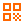

Soluciones para edificios
Soluciones para edificios
Un control de acceso eficaz es el pilar de la seguridad en cualquier edificio, esencial para gestionar quién entra y sale de manera segura. A pesar de esto, muchos aún se apoyan en métodos obsoletos como las llaves mecánicas, lo que implica retos significativos en caso de pérdidas o cambios de ocupación.
Ayax redefine la seguridad con una gama de soluciones de control de acceso, desde opciones más tradicionales hasta avanzadas tecnologías de seguridad. Cada solución está diseñada para adaptarse a las necesidades específicas de tu edificio, proporcionando un entorno seguro y controlado en todo momento.
| Standard | Premiun | Máximo | |
|---|---|---|---|
Ingreso con Reconocimiento Facial El sistema utiliza una cámara de reconocimiento facial para analizar las características anatómicas de los usuarios. Estos rasgos son imposibles de falsificar, por lo que es el único método existente 100% inviolable. |
|||
Ingreso con TAG Magnético o Clave El sistema utiliza la llave magnética tradicional y/o un código numérico de acceso. |
|||
Ingresos Personalizados Los usuarios podrán configurar el ingreso de determinadas personas para días y horarios específicos. |
|||
Clave de asalto Los usuarios tendrán un código de alerta para casos donde ingresen bajo coerción. |
|||
Alerta 24hs Ante una apertura forzada o una clave de asalto, se da intervención inmediata a la policía. |
|||
Altas y Bajas Ilimitadas El sistema permite agregar o quitar la cantidad de usuarios que se deseen. |
|||
Reporte de Alertas Si se detecta un intento de ingreso fuera de horario o de un TAG fuera de servicio, el sistema lo registra como una alerta. |
|||
Apertura Remota de Emergencia Ante una urgencia, nuestros operadores pueden permitir el ingreso de bomberos, policías y/o ambulancia para garantizar un rápido accionar. |
|||
Botón de Pánico Virtual Los usuarios cuentan con una app de tres botones conectados directamente a nuestra Central de Monitoreo: bomberos, policía o ambulancia. |
|||
Aviso de Puerta Abierta Nuestros operadores verifican que la puerta quede cerrada cada vez que una persona ingresa o egresa del edificio. En caso de que ocurra lo contrario, se comunican con el edificio para reportarlo. |
|||
Identificación de Puerta Abierta Si la puerta queda abierta, nuestros operadores detectan al responsable y se lo comunican inmediatamente al consorcio. |
|||
 Apertura a distancia Los usuarios pueden permitir el ingreso de una visita al edificio enviándole un código QR que se inhabilita luego de su uso. |
|||
Visualización de Visitas El usuario puede acceder a las cámaras en vivo para verificar quién está solicitando el ingreso al edificio. |
|||
Servicio Técnico Incluye mantenimiento periódico del equipamiento y soporte especializado las 24hs en caso de desperfectos técnicos. |
|||
Garantía sin Vencimiento Recambio total o parcial del equipo por tiempo indefinido. Esto incluye el reemplazo de la batería en caso de desgaste. |
Compatibilidad Shabat
Respetando las costumbres de la Colectividad Judía, nuestro sistema desactiva el imán cada 140 segundos para permitir la apertura con llave por un lapso de 30 segundos, al mismo tiempo que el biométrico continúa funcionando para la apertura de la puerta.
Empezá a vivir con la tranquilidad de saber que tu hogar está protegido en todo momento con nuestras soluciones
 Seguridad Virtual
Seguridad Virtual